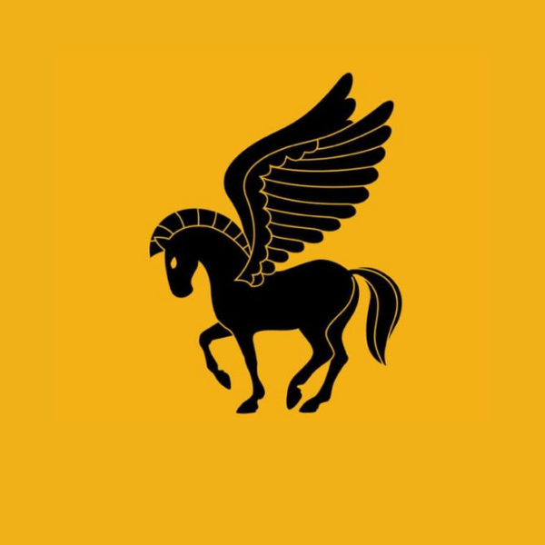

Zeus deus dos trovões, senhor do Olimpo, era filho de Cronos e Réia. Cronos tinha o hábito de devorar seus próprios filhos para que não tomassem seu lugar no trono. Até que Zeus nasceu e sua mãe Réia já cansada de tanto sangue e sofrimento deu a Cronos uma pedra embrulhada no lugar de Zeus, salvando sua vida. Réia decidiu que Zeus seria o ultimo filho e encerraria o reinado de sangue e sofrimento e tomaria o trono do pai.
Zeus foi criado no bosque de Creta e foi alimentado com mel e leite de cabra. E assim quando cresceu foi a caminho do pai para combatê-lo, eles viraram grandes inimigos, Zeus obrigou seu pai a engolir uma bebida mágica, que restituiu todos os filhos que no passado tinha devorado. Foi então que Zeus conheceu seus quatro irmãos: Deméter, Poseidon, Héstia e Hades, faltou apenas a Hera que como Zeus foi poupada e não estava ali. Zeus ainda liberou ciclopes que deu a ele o Raio. Então após dez anos, que foi o tempo que durou a guerra, Zeus subiu ao Olimpo junto com seus irmãos Poseidon e Hades que o ajudaram a destruir Cronos, e então comandaram o Céu, a Terra e os demais deuses.
Deusa do nascimento e do casamento, Hera é o símbolo da monogamia, da fidelidade conjugal e da fertilidade. Protetora dos nascimentos e das mulheres no casamento, diversos templos foram erguidos em sua homenagem. É também a rainha do olimpo, filha de Cronos e Réia,
Tem a fama de ser ciumenta com razão, pois Zeus é muito infiel - de todos os filhos que Zeus teve, dois foram concebidos em seu casamento com Hera que foi Ares (deus da guerra) e Hefesto (deus do fogo). Hera considerava muito o casamento e foi muito humilhada por Zeus por suas traições e o que a deixou muito triste, foi quando ele sozinho gerou sua filha Atena, mostrando que não precisava de Hera nem para conceber um filho.
Poseidon é o grande rei dos mares, dos oceanos, das tempestades e também dos cavalos um homem muito forte, com barbas e sempre representado com seu tridente na mão. Sendo um dos filhos que Réia teve com Cronos.
Poseidon era casado com Anfitrite. Quando se conheceram Poseidon se apaixonou por ela, mas Anfitrite o recusou e Poseidon a obrigou casar-se com ele, porém, ela para não casar, se escondeu nas profundezas do oceano, só sua mãe sabia onde ela estava. Mas com o tempo Anfitrite mudou de idéia e foi atrás de Poseidon com quem se casou e ficou sendo a rainha do oceano.

Deméter é considerada a deusa da agricultura na Mitologia Grega, ela era quem nutria a terra. Era também considerada como a protetora do casamento, deusa da gestação e das leis sagradas. Uma das doze divindades do Olimpo, filha de Cronos e Réia
Deméter fez muitas viagens com Dionísio onde ela explicava e ajudava os homens a cuidar de suas terras e de suas plantações. Na maioria das vezes que era representada em estátuas ou desenhos trazia uma foice em uma mão e na outra mão, espigas e papoulas. Na mitologia romana Deméter era conhecida como Ceres.
Ares é o deus grego da guerra. Filho de Zeus e Hera, é um dos 12 deuses do Olimpo. Amante de Afrodite, a deusa do amor, Ares odiava os pais sendo considerado perigoso pelo comportamento insaciável no campo de batalha.
Sua beleza física e o comportamento sedutor seriam os elementos que atraíram Afrodite, casada com Hefesto. As características o marcaram como amante de muitas mulheres amazonas, com quem teve vários filhos mortais.
Ares também é considerado um contraste com Atena, que em guerra priorizava a estratégia. Está associado à agressão física e à selvageria. Seriam esses os elementos necessários para o sucesso bélico. As características são suavizadas para Marte, o equivalente de Ares na mitologia romana.
Atena é a deusa da sabedoria, das artes, da inteligência e da guerra na mitologia grega. Ela nasce da cabeça de Zeus. De acordo com o mito, seu pai engoliu sua esposa, a deusa Métis, por medo de que o filho que nascesse dela pudesse derrotá-lo, conforme a profecia de Urano, e de Gaia. Após sentir fortes dores, Zeus pediu para que lhe abrissem a cabeça e Atena nasceu dessa forma, já adulta e armada, nas margens do rio Tritão. Ela nunca conheceu sua mãe.
Atena era uma das principais deusas do panteão grego, sendo uma das entidades entre os doze deuses olímpicos. Também conhecida como Palas Atena, era uma deusa guerreira que prezava pela justiça entre as pessoas.
Em uma disputa com Poseidon, Athena se tornou patrona de uma região da Ática, hoje conhecida como Atenas. Na mitologia romana, a deusa correspondente é Minerva.
Apolo é um deus da mitologia greco-romana, considerado um dos maiores deuses do Olimpo. Ele é venerado como o deus do Sol, da profecia, da poesia, das artes, da música, da cura, da justiça, da lei, da ordem, do tiro ao alvo e da peste. Também é conhecido como o deus dos rebanhos e das colheitas.
Filho de Zeus e Leto, Apolo nasceu na ilha de Delos, quando sua mãe se escondia da esposa de Zeus, Hera. Assim que nasceu, ele foi alimentado com néctar dos deuses e ambrosia. O alimento o transformou diretamente de bebê para homem.

Ártemis é a deusa da caça, da Lua, da castidade, do parto e dos animais selvagens. Considerada uma fantástica caçadora, Ártemis era cultuada por aliviar as doenças femininas, proteger as crianças e os jovens. Filha de Zeus e Leto, Ártemis teve um irmão gêmeo, Apolo, o deus do Sol. Nasceu um dia antes de Apolo e ficou sendo sua tutora. A tarefa de cuidar do irmão teria despertado o lado de protetora.
Ártemis pediu ao pai, Zeus, que a fizesse virgem por toda a eternidade. Essa condição incitava o desejo de deuses e homens, que tinham a atenção recusada. Embora fosse amorosa, também tinha traços de uma personalidade vaidosa e vingativa. Quando um desejo era desobedecido, agia de maneira raivosa. É uma das mais veneradas divindades da mitologia grega e na mitologia romana ela é chamada de Diana.

Hefesto é o deus do fogo, dos metais e da metalurgia. Filho de Zeus e Hera, Hefesto nasceu com uma deficiência: era coxo. Isso causou repugnância em sua mãe que o rejeitou desde o nascimento. Ela o lançou do Monte Olimpo para que ninguém visse seu filho, pois estava envergonhada. Depois da queda, ele foi encontrado e ficou sob os cuidados de Tétis, uma ninfa do mar. Com ela, aprendeu a manusear os metais e a trabalhar com eles.
Como era o deus do fogo e dos metais, seu trabalho era feito nos vulcões. Ali, ele contava com a ajuda dos ciclopes, gigantes que possuíam somente um olho. Hefesto foi responsável por forjar diversos objetos dos deuses como o escudo mágico de Zeus (Égide), a armadura de Aquiles, o arco e flecha de Eros, o cetro de Agamenon, o tridente de Poseidon, a cinta de Afrodite, dentre outros.
Hefesto já se relacionou com a deusa da beleza e do amor, Afrodite, a pedido do seu pai, Zeus. Porém, foi traído diversas vezes por Afrodite, muitas vezes por mortais e até mesmo com deuses, como Ares.

Afrodite é a deusa do amor, da beleza e da sexualidade. Ela foi considerada a personificação do ideal de beleza dos gregos na Antiguidade. E, na Idade Moderna serviu de inspiração para diversos artistas do Renascimento.
A deusa era filha de Zeus, o deus dos deuses, e Dione, deusa das ninfas. Ela nasceu na Ilha de Creta com uma beleza estonteante, sendo muito vaidosa, sedutora, e vingativa. Reza a lenda que ela já nasceu adulta no mar e por isso, o nome “Afrodite” significa “nascida da espuma”. Casou-se com Hefesto através de uma união arranjada pelo pai, e logo se apaixonou por Ares, tendo 7 filhos com o mesmo. Teve relações com outros deuses, e ainda mantém relações com mortais.
Deus dos ladrões, das comunicações, das viagens e dos comércios. Sendo filho de Zeus com a ninfa Maia. Hermes é o atual mensageiro dos deuses e muito venerado pelos mesmos e o guardião da entrada do submundo. É também o Patrono da ginástica.
Hermes é considerado um deus astuto e malandro, que usaria essa característica para fazer o bem e o mal. Usava suas habilidades diplomáticas e de tradutor para fazer um contraponto entre deuses e os homens. Seu aspecto romano é chamado de Mercúrio.

Dionísio é filho de Zeus com a mortal Selene. Ele é o deus das uvas, do vinhos, das festas e do teatro. Como ele é filho de uma mortal ele nasceu como um semideus, e só anos mais tarde se tornou um deus.
Dionísio teve uma vida conturbada desde antes de seu nascimento. Sua mãe veio a falecer, devido a um plano de Hera, enquanto ainda estava grávida dele. Como ele possuía metade se sangue imortal ele sobreviveu, e para salvar sua vida, seu pai, Zeus, colocou o bebê que ainda estava em desenvolvimento na própria coxa, para que assim terminasse sua gestação. Após alguns meses Zeus tirou a criança da coxa e o batizou como Baco e entregou para que fosse criado pelos tios mortais, mas após alguns anos ele foi mandado para o monte Nisa, onde cresceu entre as ninfas e os sátiros.
No monte Nisa ele descobriu que possuía um talento, ele conseguia produzir sucos de qualquer fruta que encontrasse, e com as uvas não foi exceção. Todos ficaram tão apaixonados por aquela intenção batizada de vinho que os deus concordaram em transformá lo em deus também. Então ele recebeu o nome de Dionísio, seu nome significa deus de Nisa e ele é o décimo segundo olimpiano.
Hades é o deus do submundo, do reino dos mortos, e na mitologia romana, ele é chamado de Plutão. Também é chamado de deus da riqueza porque possui todos os metais preciosos do planeta. Reside e governa o lugar mais sombrio da Terra, para onde vão as almas dos mortos.
Hades dominou o reino dos mortos, um lugar onde só imperava a tristeza. Conseguiu esse domínio através de uma luta contra os titãs, que Poseidon, Zeus e ele venceram. Assim Poseidon ficou com o domínio dos mares, Zeus ficou com o céu e a Terra e Hades com o domínio das profundezas. Além das sombras e almas encontradas em seus domínios, é também cuidadosamente vigiado pelo Cérbero, um cão de três cabeças e cauda de Dragão.
Iris é a deusa do arco-íris, conhecida como mensageira dos deuses do Olimpo. Ela é, muitas vezes representada como a serva, aia e mensageira pessoal da deusa Hera. Íris é filha do titã Taumas (uma divindade marinha) e de Electra (uma Oceânide, filha de Oceano e Tétis). E, deste modo, profundamente relacionada aos oceanos e mares.
Íris e Hermes eram rivais em tudo, depois de terem se amado por muito tempo e ele a trair com Afrodite. Então Íris e Hermes se separaram e ela foi seduzida por Zéfiro, o deus dos Ventos do Oeste.
Hipnos é a personificação do sono e da sonolência, é filho da deusa da noite, Nix, e de Érebo, que simbolizava a escuridão primitiva constituída no instante da criação. Ele tinha inúmeros irmãos, dos quais o mais importante era seu gêmeo Tânatos, divindade responsável pela esfera da morte. Os demais foram concebidos apenas por meio do desejo de Nix ou através do auxílio de Érebos.
Este deus reside em um palácio construído dentro de uma grande caverna no oeste distante, onde o sol nunca alcançava, junto com sua esposa Grácia Pasitea, presenteada a ele por Hera, deusa da família e dos ciúmes, pelos serviços prestados. Ele adota a configuração humana, mas ao se recolher para repousar se converte em ave.
Deusa da vingança e justiça distributiva. É filha de Nix e não se sabe quem é seu pai. Nêmesis foi criada junto com Têmis que era filha de Gaia, que foi dada a Nix, e foram criadas como irmãs. São as duas deusas com a mesma educação e também atributos comuns. Nêmesis castigava aqueles que cometiam crimes e ficavam sem penitências, os filhos que xingavam os pais, consolava as mulheres que ficavam sem seus maridos e também ajudava aqueles que tinham que pagar injustamente, pois nada tinham cometido.
Nêmesis era uma deusa muito atraente e bonita, assim como Afrodite, é a lembrança de um anjo, pois tem asas em suas costas. Uma de suas aventuras amorosas foi com Zeus que a perseguiu incansavelmente, mas ela não queria nada com ele e se transformava em vários tipos de coisas, até que um dia ela se transformou em gansa e Zeus por sua vez se transformou em Cisne e com isso conseguiu seu amor e uma filha com ela também, que botou um ovo e deste ovo nasceu Helena.
Nice é a deusa da vitória e da força nas batalhas. Ela sempre é representada como uma entidade feminina dotada de um par de asas. Por isso, a deusa é capaz de se deslocar a grandes velocidades. É filha do Titan Pallas e de Estige. Assim, é irmã de Cratos (a potência), Bia (a violência) e Zelo (a fúria).
A deusa é frequentemente associada à coroa de louros. Segundo as lendas, Nike voava pelos campos de batalha coroando os vencedores com glória e fama. Seu aspecto romano se chama Vitória.

Deusa da Imortalidade e da Juventude Eterna, Hebe era filha dos deuses Zeus e Hera, tendo herdado de sua mãe o presídio dos casamentos e por isso reverenciada pelas noivas jovens. Dedicada aos trabalhos domésticos, ela era incumbida de servir a ambrosia aos deuses que moravam no Olimpo e manter as taças cheias de nectar quando estas esvaziavam.
Com o fulgor de sua juventude, Hebe passou a dançar junto com a Musas e as Horas ao som da lira de Apolo. Após a morte do herói Hércules, ele foi imortalizado e admitido no Olimpo. Por ter perseguido Hércules durante toda a sua vida como mortal, Hera concedeu a ele o casamento com Hebe. Dessa união nasceram os gêmeos Alexiares e Anicetus, cujos nomes significam "aquele que afasta guerra" e "o invencível". Por serem filhos da Deusa da Eterna Juventude, eles permaneceram eternamente crianças...
Deusa da fortuna, prosperidade e a sorte de uma cidade, seu destino e sorte. Tique é filha de Oceano e Tétis, fazendo parte das oceânidas, as 40 proles de Oceano e Tétis.
Representada por uma bela mulher sentada ou em pé em uma flor de lótus, geralmente com dois jarros, onde um demonstra a abundância de ouro e o outro com flores de lótus. Seu aspecto romano se chama Fortuna. Foi concebida como a divindade que guiava e conduzia os assuntos do mundo. Sempre com os olhos vendados, Tykhe não fazia qualquer distinção entre as pessoas. Assim a boa ou má sorte não dependia do merecimento, mas de quem procurava estar sempre ao seu lado.
Hécate, também chamada de Perséia, era filha dos titãs Astéria — a noite estrelada e Perses — o deus da luxúria e da destruição, mas foi criada por Perséfone — a rainha dos infernos, onde ela vivia. Antes Hécate morava no Olimpo, mas despertou a ira de sua mãe quando roubou-lhe um pote de carmim. Ela fugiu para a terra e tornando-se impura foi levada às trevas para ser purificada. Vivendo no Hades, ela passou a presidir as cerimônias e rituais de purificação e expiação. Hécate em grego significa “a distante”.
O tríplice poder de Hécate se estendia do inferno, à terra e ao mar. Ela rondava a terra nas noites da lua nova e no mar tinha seus casos de amor. Considerada uma divindade tripla: lunar, infernal e marinha, os marinheiros consideravam-na sua deusa titular e pediam-lhe que lhes assegurasse boas travessias. O próprio Zeus lhe deu o poder de conceder ou negar qualquer desejo aos mortais e aos imortais. Foi Hécate quem ajudou Deméter quando ela peregrinou pelo mundo em busca de sua filha Perséfone.
O deus Éolo vive numa ilha flutuante na Eólia com seus doze filhos. Foi presenteado por Zeus e recebeu o poder de despertar e acalmar os ventos tornando-se o deus dos ventos.
Filho de Hipotes e de Melanipe. foi chamado de senhor dos ventos porque ensinou como navegar pela região, perigosa por causa das correntes marinhas e da maré. Querido dos deuses imortais e guardião dos ventos (tinha o poder de guardar os ventos em uma caixa, para ajudar na navegação).
Perséfone é a deusa do submundo na mitologia grega. Também é considerada a deusa da agricultura, das estações, das flores, dos frutos, das ervas e da fertilidade. Na mitologia romana, ela é chamada de Proserpina. Sendo filha de Deméter e portadora de uma beleza absurda, capaz de atrair muitos homens, mas o principal deles, Hades.
Ela foi raptada pelo seu tio e deus do submundo Hades, enquanto colhia narcisos. A partir desse momento, os alimentos e os campos foram atingidos pela tristeza de Deméter, deusa responsável pela agricultura. Receosos das consequências que isso poderia acarretar, os deuses logo interviram para encontrar sua filha. Ao revelarem onde estava Perséfone, Deméter foi pedir a ajuda de Zeus. No entanto, Hades não permitiu o retorno de Perséfone. O deus do submundo ludibriou a deusa e fez com que ela comesse o fruto que selaria o casamento: a romã. E, como consequência desse ato, ela ficaria com ele um terço do ano.

É o vento do norte que trazia o inverno ou devorador, e filho de Astreu e Eos, e irmão de Héspero, Euro, Zéfiro e Noto. Ao contrário de seu irmão Zéfiro, que era identificado como uma brisa ou vento mais suave, Bóreas era imprevisível e grandemente furioso.
Bóreas é muito forte e tem um violento caráter. Com frequência era representado como um idoso alado com cabelo e barbas longas vestindo uma túnica de nuvens. Para os romanos é o deus Aquilo. Os gregos achavam que seu lar estava em Trácia e descrevem uma terra ao norte chamada Hiperbórea que significa "para além de Bóreas". Nessa terra, as pessoas viviam em completa felicidade até idades extraordinariamente longas.
Melinoe é o deusa grega dos fantasmas, ela é muitas vezes confundida com Hécate. Ela vagou a terra todas as noites com um trem de fantasmas, assustando qualquer um em seu caminho. Isto foi dito ser a razão pela qual os cães ladram em nada à noite.
Melinoe está insatisfeita com Hades governar o submundo, e o fato de que ela não pode assombrar os mortais do mundo humano de dia. Ela opta por Cronos para governar, como ela é prometido que ela será capaz de assombrar sempre que ela quer. Sua personalidade um tanto desagradável poderia ter sido provocada pela amargura de seus pais parecendo não ter muito interesse por ela. Isso também poderia ter solicitado sua mudança de lado.
Macaria é a deusa grega da boa morte e de um final feliz, filha de Hades. Possui um afeto grande pelos mortais, em especial os justos e de bom coração, e em consequência disso não permitia que Thanatos, o deus da morte, fosse buscar esses últimos quando os mesmos estivessem no fim de suas vidas. Ela ia pessoalmente, colocando-os num estado profundo de paz e tranquilidade.
Macaria nunca abandonava a alma após a morte. As acompanhava nos ritos funerários, caminhava ao lado deles até o submundo e ficava presente durante o julgamento do finado. Ela tem a habilidade de caminhar pelos humanos sem ser percebida — exceto pelo aroma de seu perfume de flores de primavera —, somente pela alma que se encarregasse.

Macaria nunca abandonava a alma após a morte. As acompanhava nos ritos funerários, caminhava ao lado deles até o submundo e ficava presente durante o julgamento do finado. Ela tem a habilidade de caminhar pelos humanos sem ser percebida — exceto pelo aroma de seu perfume de flores de primavera —, somente pela alma que se encarregasse.
Seu papel na mitologia grega é acompanhado por Hades, o deus do mundo inferior. Está em histórias famosas como a de Sisifo e do Rei Midas. Seu equivalente romano é Mors ou Letus.
Nix é a personificação da noite, filha do Caos, sendo a quinta criatura depois de seus irmãos Gaia, Tártaro, Eros e Érebo, a emergir do vazio. Ela é a patrona das feiticeiras e bruxas, deusa dos segredos e mistérios noturnos. Cultuada por aqueles que acreditavam que ela dá fertilidade a terra para brotar ervas encantadas.
Os filhos de Nix são a Hierarquia em poder para os deuses, sua maioria são divindades que habitam o mundo subterrâneo e representam forças indomáveis, que poucos podem conter.
Eros é o deus da paixão, do amor e do erotismo na mitologia grega. Sua principal função era unir as pessoas por meio de suas flechas mágicas. Eros foi uma criança muito mimada e por isso, seu aspecto era sempre muito infantil. Quando Afrodite teve seu segundo filho com Ares, Anteros, Eros começou a se tornar um homem muito belo. Ele era muito corajoso, travesso e sempre estava em busca de intrigas. Foi assim que durante muito tempo lançou suas flechas nas pessoas para que elas se apaixonassem.
A relação mais famosa de Eros é com Psiquê, uma princesa. Incumbido de lançar uma flecha na moça e numa criatura muito feia, ele errou e acabou se acertando. Isso porque sua mãe, Afrodite, ficou invejada com a beleza de Psiquê e pediu ao filho para que ela se apaixonasse por um monstro. Entretanto, seu plano não deu certo e ele se apaixona perdidamente por Psiquê e com ela tiveram Hedonê (ou Volúpia), a deusa do prazer.
Eros casou-se com ela, mas a condição era que Psiquê nunca visse seu rosto. No entanto, numa noite, ela viu a beleza do rosto de seu amado. Nesse momento, ele acordou e sentiu-se traído por sua mulher, cortando as relações com ela. Ele representava o amor verdadeiro e na mitologia romana é chamado de Cupido.

Eos era filha dos titãs Hipérion e Téa, irmã de Selene (Lua) e Hélios (Sol). Eos representava a aurora, o amanhecer, sendo normalmente representada na forma de uma mulher com longos cabelos louros e unhas tingidas de rosa, para colorir o amanhecer, além de ter uma carruagem puxada por cavalos alados.
Eos se apaixonou pelo mortal Titono e pediu a Zeus que lhe fizesse imortal. Zeus atendeu o seu pedido, porém a deusa esqueceu de pedir a juventude eterna para seu amante, fazendo com que Titono se tornasse um velho decrépito, sem nunca morrer. Ao ver seu erro, Eos pediu posteriormente que Zeus transformasse Titono em uma cigarra.
Quione (Boréade) é a deusa da neve, filha de Bóreas, o vento do norte, e Oritia, raptada por Bóreas.
Ela era amada por Poseidon e teve um filho, Eumolpus. Com medo da ira de seu pai, ela jogou a criança no mar, mas Poseidon o salvou e confiou-o aos cuidados de Benthesikyme. Os Eumolpidae encarregados dos mistérios eleusinos reivindicaram descendência dela, como mãe de Eumolpus com Poseidon. Ela quase nunca foi representada na mitologia grega ou romana. No entanto, em alguns mitos, alega-se que ela teve uma filha com um homem desconhecido e o bebê foi morto pelo destino assim que nasceu. O nome dela era Sais. Ela também teve um caso com Apollo. Mais tarde, ela ganhou autoconfiança e se gabou de ser melhor que Artemis, porque dois deuses se apaixonaram por ela e zero nela. De acordo com algumas versões da deusa, por seu orgulho, ela trespassou a guarda e, segundo outros, Quione foi protegida pelo poder de Poseidon e Apolo.
Érebo foi um deus primordial, representando a escuridão. Os órficos o consideravam filho de Cronos e Ananke. Higino e Cícero o consideravam pai de Eros. Em épocas tardias, o nome do deus foi associado ao compartimento central do reino de Hades, a igual distância dos Campos Elísios e do Tártaro. Tinha seus domínios demarcados por mantos escuros e sem vida.
Conhecido por ser um dos maiores inimigos de Zeus, as histórias contam que os Titãs pediram ajuda a Érebo, que pessoalmente desceu ao Tártaro para libertar os filhos de Gaia, sendo surpreendido por Zeus e Hades que tiveram a ajuda de Nix para lança-lo nas profundezas do rio Aqueronte.
Deimos é a personificação grega e deus do pânico, filho de Ares, deus da guerra e de Afrodite, deusa da beleza e do amor. Também representava o medo de perder alguém. Irmão de Fobos, do qual dividiu muitas histórias juntos, espalhando o pânico e o medo pelo mundo, acompanhados sempre da quadriga de cavalos pretos do pai. Tiveram uma grande participação na maioria dos trabalhos de Ares.
Deimos faz com que todos sofram, desde o início de sua existência. Sua forma romana equivalente é Formido ou Metus.
Fobos, é o deus do medo, na mitologia grega. É dele que vem a palavra fobia. É filho da deusa do amor Afrodite e de Ares o deus da guerra, tem como irmão gêmeo Deimos, o deus que representa o terror e pânico.
Fobos e o irmão são pouco mencionados ao longo da história, em comparação a outros deuses. No entanto, os seus poderes são bem conhecidos. Os adoradores de Phobos, desenhavam a sua face nos escudos de forma a aumentar o medo dos seus adversários. Há também referências que se faziam sacrifícios de sangue em seu nome, pois era do agrado desse deus. Sua forma romana equivalente é Timor ou Tímoro.